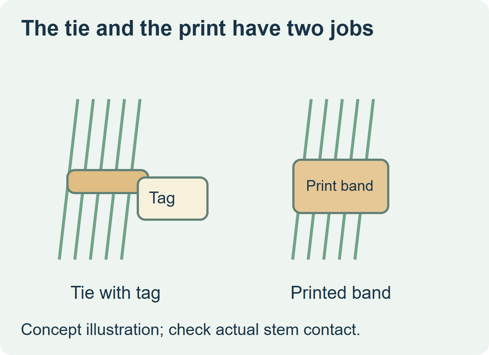
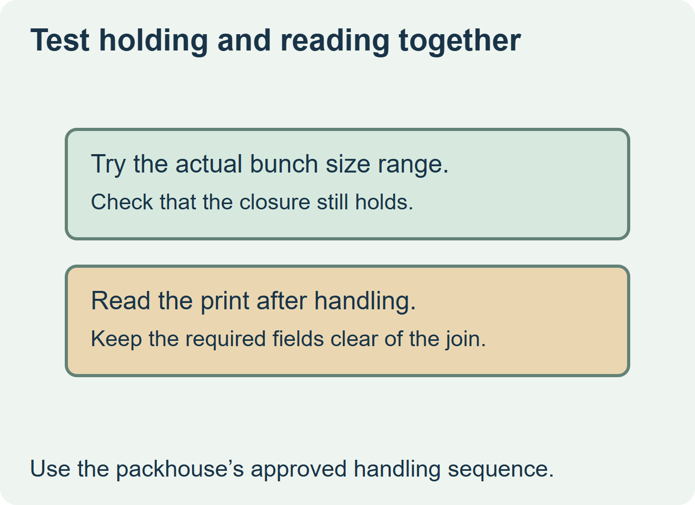

Keep a separate tag when the current tie already holds the bunch and the tag can be attached and read without disturbing that tie. Evaluate a printed band when the same piece needs to hold and identify the bunch and the line can close that band consistently. Ask the produce packager to confirm the intended food contact and attachment before choosing either format.


Use the attachment that works on the range of bunches
Reflex describes self-adhesive bunch labels for items such as asparagus. Grafidel describes a band format closed by a supported bunching machine. Those are examples of distinct constructions. Quote the attachment that fits the packhouse process, and request the converter’s confirmation of what material, closure and print formats it can supply. Reflex bunch labels and Grafidel’s bunch band example
| Bunching condition | Route to evaluate | Physical check |
|---|---|---|
| The current tie stays in use | Tag or folded label qualified with that tie | Retention and readable presentation after normal handling. |
| The band replaces the tie | Printed band closed by the supported equipment | A secure bunch across the size range and copy clear of the closure. |
| Variable information is added at packing | Format compatible with the intended marking station | Inspect the actual print and readability after closing. |


Compare the complete packed bunch
Use representative small and large bunches at normal packing conditions. Confirm the stems remain held through packing and retail handling without applying damaging pressure. Look at the print from the intended reading position. If the tag rotates or the closure covers copy, change the print landing or attachment before releasing the order.
Compare the cost per accepted bunch, including any separate tie, tag, print step and setup work. For a hypothetical asparagus run using a tie already approved for several bunch sizes, a compatible attached tag may let the buyer retain that process. A printed band is worth sampling if it can carry the information and do the holding work on the same line.
Discuss the unresolved label requirement
Send bunch dimensions across the intended range, the tie or band specification, machine or manual setup, copy and variable fields, expected moisture and handling, and run quantities. Review food label options and prepare a label specification inquiry. The contact page opens an email draft and lists email or WhatsApp for attachments. Supply, proof options, testing, pricing and timing require project confirmation.